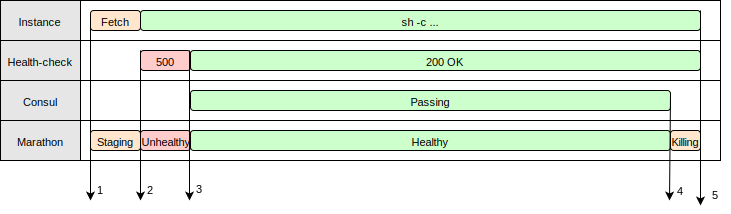
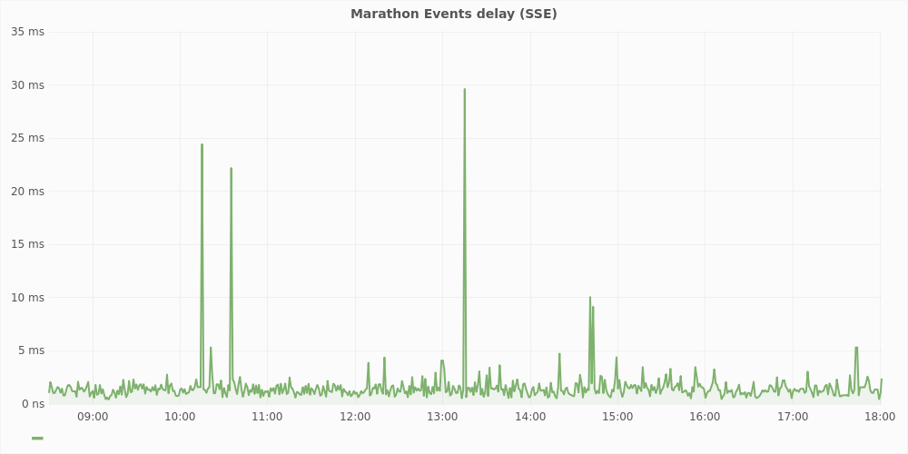

executor process that is launched on agent nodes to run the framework’s tasks
Mesos Architecture

Executor Types
- Command
- Docker
- Default
- Custom
12 Factor Apps
a methodology for building software-as-a-service apps- Codebase — One codebase tracked in revision control, many deploys
- Dependencies — Explicitly declare and isolate dependencies
- Config — Store config in the environment
- Backing services — Treat backing services as attached resources
- Build, release, run — Strictly separate build and run stages
- Processes — Execute the app as one or more stateless processes
- Port binding — Export services via port binding
- Concurrency — Scale out via the process model
- Disposability — Maximize robustness with fast startup and graceful shutdown
- Dev/prod parity — Keep development, staging, and production as similar as possible
- Logs — Treat logs as event streams
- Admin processes — Run admin/management tasks as one-off processes
- Config
- Disposability
- Logs
Config
The twelve-factor app stores config in environment variables
Disposability
The twelve-factor app’s processes are disposable, meaning they can be started or stopped at a moment’s notice.
Disposability
Processes should strive to minimize startup time.
Disposability
Processes shut down gracefully when they receive a SIGTERM
Application Lifecycle
Events delay
Logs
A twelve-factor app never concerns itself with routing or storage of its output stream. It should not attempt to write to or manage logfiles. Instead, each running process writes its event stream, unbuffered, to stdout.
ContainerLogger
Who is using a Custom Executor?
- Aurora
- Singularity
- https://github.com/Devatoria/go-mesos-executor